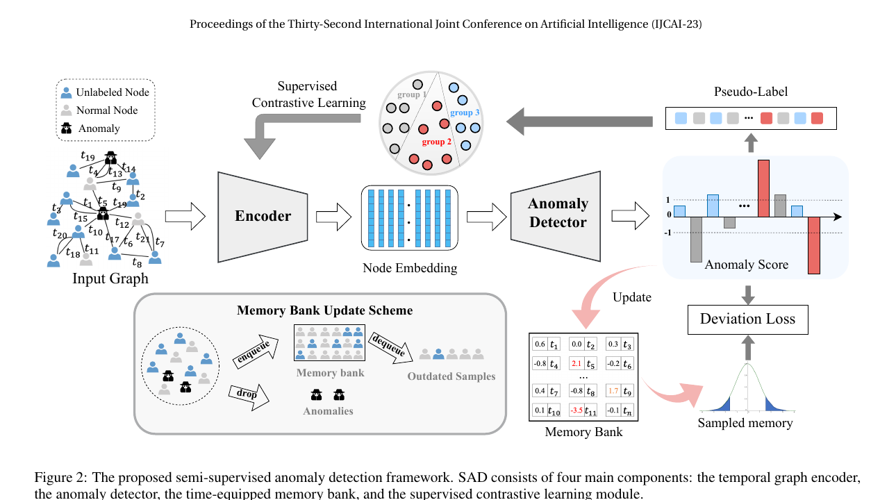
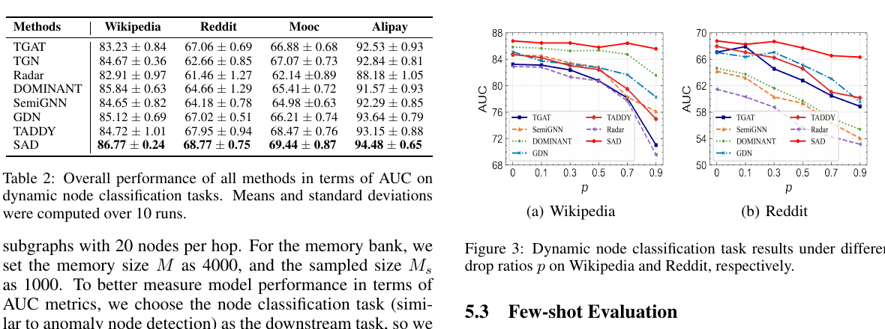

TGAT representation
과거 이웃의 attribute, edge feature, 상대 시간차를 message passing으로 모읍니다. 논문 구현은 2-layer·2-head TGAT, 128-dimensional embedding입니다.
Technical review · sparse-label learning
Semi-Supervised Anomaly Detection
on Dynamic Graphs
적은 정답 라벨과 많은 미라벨 관측이 있을 때, 시간에 따라 변하는 관계 속에서 이상 점수를 학습하는 프레임워크입니다.
One-minute read
SAD는 시간이 흐르며 node, edge, attribute가 변하는 그래프에서 이상을 찾습니다. 충분한 이상 라벨을 모으기 어려운 현실을 전제로, 소수의 라벨과 다수의 미라벨 표본을 함께 이용합니다.
시간 그래프 encoder가 node representation을 만들고, anomaly detector가 점수를 예측합니다. 여기에 시간 정보를 가진 memory bank가 미라벨 표본의 분포를 참조점으로 제공하며, 점수 차이로 만든 의사 그룹이 contrastive learning에 쓰입니다.
Architecture · original figure

과거 이웃의 attribute, edge feature, 상대 시간차를 message passing으로 모읍니다. 논문 구현은 2-layer·2-head TGAT, 128-dimensional embedding입니다.
2-layer MLP가 zᵢ(t)를 scalar anomaly score sᵢ(t)로 바꿉니다. 절대적 score 자체보다, 현재 정상 reference 분포에서의 거리로 판단합니다.
normal·unlabeled score와 저장 시각을 queue에 보관합니다. 오래된 score는 작은 weight를 받고, queue가 차면 FIFO 방식으로 제거됩니다.
deviation 차이가 작은 node를 pseudo-positive로 묶어 embedding을 가깝게, 큰 차이는 멀게 만듭니다. 이 loss는 encoder에만 역전파됩니다.
Mechanism in detail
SAD의 설계는 “few-shot label만으로 score head를 학습하면 미라벨 data가 버려진다”는 문제에서 출발합니다. 따라서 미라벨 표본을 (1) 정상 reference distribution의 추정과 (2) representation regularization 두 경로에 사용합니다. 둘은 서로 다른 역할을 하며, 단순 pseudo-label classification과는 다릅니다.
문제 정의에서 event는 δ(t) = (vᵢ, vⱼ, t, xᵢⱼ)입니다. 즉 node 쌍의 interaction과 시각, edge feature가 들어오는 continuous-time graph입니다. 저자들은 단일 static graph snapshot이 아니라 과거 event에 조건화된 node representation을 사용합니다.
k번째 layer는 과거 neighbor의 representation, edge feature, 상대 시간 Δt를 aggregate한 뒤 자기 representation과 combine합니다. 논문은 cosine-based relative time encoding을 쓰는 TGAT를 backbone으로 택합니다.
zᵢ(t) = TGAT(G<t, Δt, xᵢⱼ)MLP score head는 sᵢ(t)=W₂ReLU(W₁zᵢ+b₁)+b₂입니다. memory는 y=0(normal) 또는 −1(unlabeled)의 score·timestamp만 저장합니다. 최근 score일수록 큰 time-decay weight로 weighted mean과 standard deviation을 계산합니다.
dev(vᵢ,t) = (sᵢ(t) − μᵣ(t)) / σᵣ(t)labeled normal은 deviation이 0으로, labeled anomaly는 margin 이상으로 멀어지도록 Ldev를 계산합니다. 미라벨 표본은 deviation 차이가 1σ 미만이면 positive pair가 되며, 가중 supervised contrastive loss Lscl가 encoder를 정렬합니다.
L = Ldev(θenc,θano) + αLscl(θenc)Evidence in the paper
연속적인 interaction stream에서 node anomaly를 구분하는 문제입니다.
3개 공개 interaction graph와 1개 산업 데이터셋을 사용했습니다.
논문 표의 네 데이터셋 모두 시간 순서 기반 train/validation/test 분할입니다.
라벨 50%를 무작위로 제거한 분석에서 memory bank가 가장 큰 추가 향상을 보였다고 보고합니다.

원 논문은 소수 라벨 조건에서 기존 방법보다 우수하다고 보고하지만, 이 결과는 동적 상호작용 그래프에 대한 것입니다. 초음파 또는 CHD 데이터에 일반화된다는 직접 근거는 아닙니다.
Proposed translation
프레임을 단순한 시간열로 다루는 것만으로 충분하지 않을 때에만 그래프를 고려해야 합니다. 예를 들어 frame token을 node로, temporal adjacency·appearance similarity·anatomy/view consistency를 edge로 둔다면, 품질 변화와 반복 관측을 함께 표현할 수 있습니다.
한 clip의 frame, 혹은 검출된 cardiac region을 node로 두고 image embedding과 quality feature를 attribute로 둡니다.
시간 인접 edge만이 아니라 view/phase/appearance 유사 edge를 명시하고, edge 생성 규칙을 train set에서 고정합니다.
확진 CHD label이 희소하다면 frame label을 억지로 만들기보다 clip/patient label과 review priority를 구분해 설계합니다.
Implementation review
시간 순서만 있다면 temporal transformer/RNN/pooling이 더 단순한 기준선입니다. graph edge가 추가 정보를 주는지 먼저 확인합니다.
정상 분포의 정의가 기관·주수·view quality에 따라 변할 수 있습니다. memory bank가 섞어서는 안 되는 subgroup을 정합니다.
라벨 비율을 단계적으로 줄이는 ablation, calibration, anomaly recall at fixed review budget, 오류 사례 표본 감사를 포함합니다.